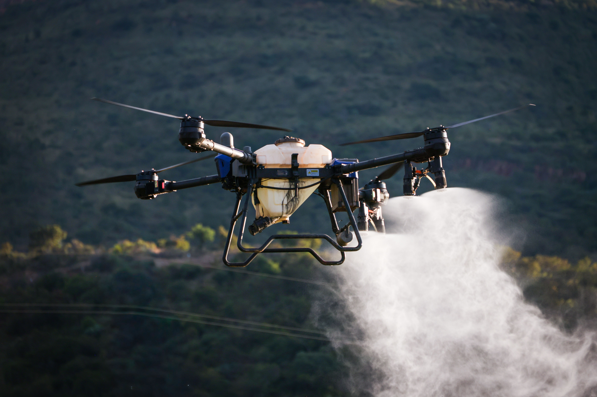
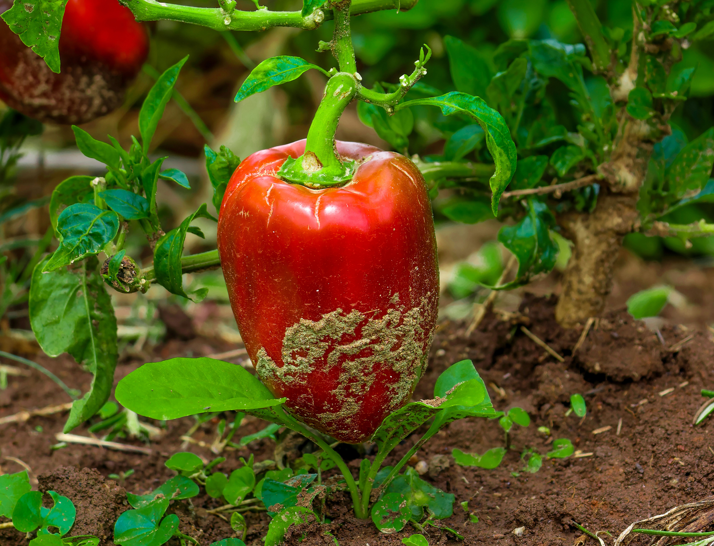

🌿 Herbicidas
Os herbicidas são utilizados para controlar plantas invasoras que competem com as culturas agrícolas por água, nutrientes e espaço. São amplamente usados em plantações de soja, milho e trigo.
Vá para
🐛 Inseticidas
Os inseticidas combatem insetos causam grandes prejuízos às lavouras. Seu uso ajuda a proteger a produção agrícola, mas deve ser feito com cuidado para evitar danos a outras espécies.
Vá para
🍄 Fungicidas
Os fungicidas são empregados no controle de doenças causadas por fungos, protegendo as plantações contra infecções que podem comprometer a qualidade e a quantidade da produção.
Vá para